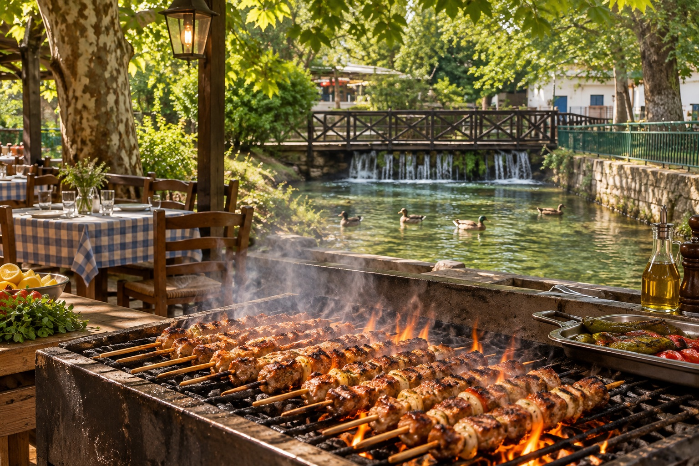
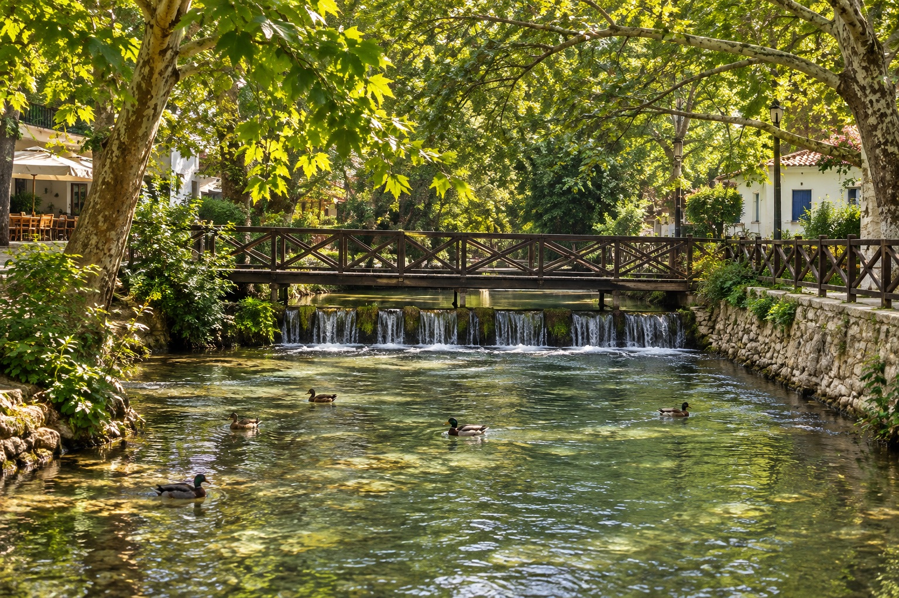
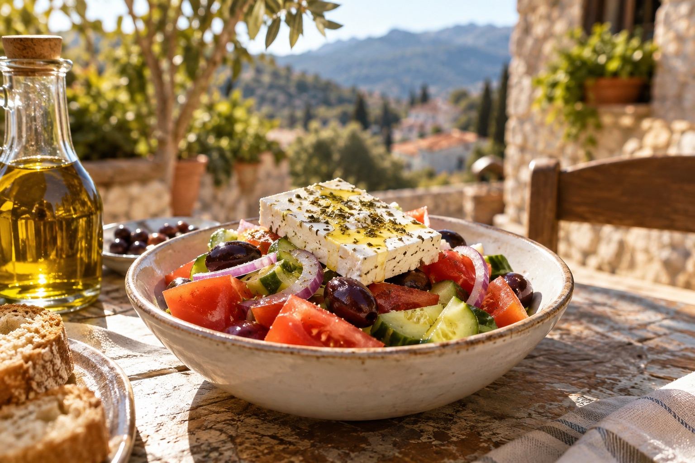

Η ΦΩΤΙΑΤΟ ΝΕΡΟΤΟ ΤΡΑΠΕΖΙ.
Σουβλάκι στη σχάρα. Δροσιά κάτω από τα πλατάνια. Όλα όσα κάνουν μια στιγμή να κρατήσει.
Ανακαλύψτε τον τόπο
Εικαστικές εικόνες · πραγματικές φωτογραφίες θα προστεθούν
ΣΤΟΝ ΑΓΙΟ ΙΩΑΝΝΗ
Ένα τραπέζι εκεί όπου κυλά το νερό.
Στα νερά του Αγίου Ιωάννη, οι ξύλινες γέφυρες και τα πλατάνια δίνουν τον ρυθμό. Ο ήχος της σχάρας σε καλεί να καθίσεις. Και η παρέα σε κάνει να μείνεις.
ΑΠΟ ΤΗ ΣΧΑΡΑ
Η μυρωδιά σε βρίσκει πριν βρεις το τραπέζι.
Σουβλάκια πάνω στα κάρβουνα, λεμόνι και ζεστό ψωμί στη μέση. Η πιο ωραία αρχή είναι αυτή που μοιράζεται.
01 / FIRE


Λίγα βήματα από το τραπέζι, ένας άλλος ρυθμός.
Μικροί καταρράκτες, ξύλινες γέφυρες, πάπιες στο νερό. Κάτω από τα πλατάνια, ο χρόνος κυλά λίγο πιο αργά.
Η περιοχή στον χάρτηΚαθίστε. Τα υπόλοιπα ας περιμένουν.
Μια ελληνική ταβέρνα είναι τα πιάτα στη μέση, οι φωνές γύρω από το τραπέζι και η τελευταία μπουκιά που κανείς δεν θέλει να πάρει.




Σκιά από πλατάνια. Το νερό δίπλα σου. Η παρέα απέναντι.
Αυτό είναι το σκηνικό του Αγίου Ιωάννη Σερρών: μικρές γέφυρες, τρεχούμενο νερό και μια ανάσα πράσινο γύρω από το τραπέζι.
AGIOS IOANNISSERRES, GR
Μια γεύση πριν φτάσετε.
Είκοσι κινηματογραφικές στιγμές από τον τόπο, την κουζίνα και το τραπέζι.
01 / 20Οι εικόνες είναι δημιουργημένες εικαστικές προσεγγίσεις και δεν απεικονίζουν πιστά τον πραγματικό χώρο ή τα πιάτα.

Έχουμε κρατήσει μια θέση για εσάς.
Στον Άγιο Ιωάννη Σερρών, ανάμεσα στη φωτιά και το νερό. Ελάτε να μοιραστούμε μια όμορφη στιγμή.
Δείτε την περιοχήΗ ακριβής διεύθυνση, το τηλέφωνο και οι ώρες λειτουργίας θα προστεθούν σύντομα.